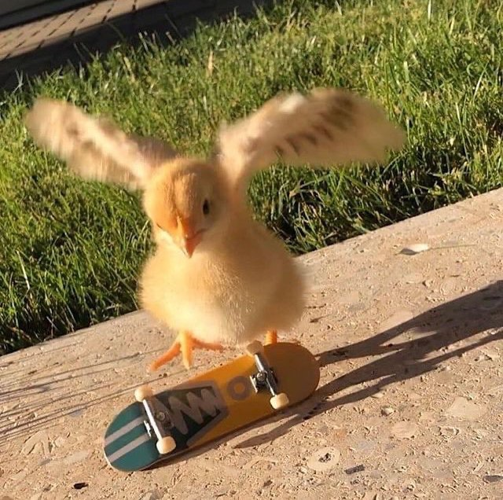

Recipes
Projects
Home
John Chadfield

about
Technologist, product manager, dad, union builder. Part of
Join Together Co-op
, occasional arborist. Forklift certified.
contact
Drop me a message at joxn [at] disroot.org or find me on:
twitter
,
mastodon
, and even
linkedin
.